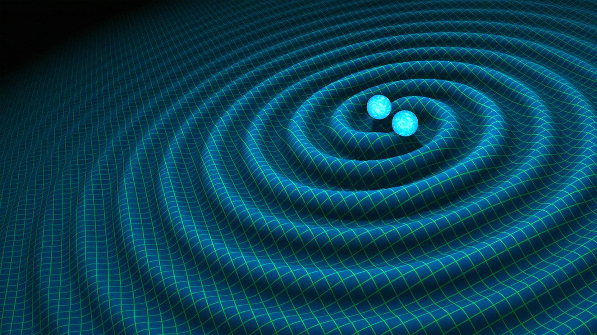

Gravitational waves are ripples that disrupt the fabric of space-time. All objects with mass and spin/motion produce gravitational waves, but most are too minor to detect. Only the most compact (dense+massive) objects in the universe are capable of producing detectable gravitational waves. These are colliding black holes, white dwarfs, and neutron stars, supernovae, quasars, pulsars and the wobbly rotations of imperfect neutron stars, and remnants of gravitational radiation created by the birth of the Universe. Although gravitational waves were first hypothesized by Albert Einstein in his theory of relativity in 1916, proof of their existence would not come until 1974, when two astronomers at the Arecibo Radio Observatory in Puerto Rico discovered a binary pulsar and analyzed its motion over multiple years. The first visible contact with gravitational waves came on September 14, 2015, when LIGO (Laser Interferometer Gravitational-Wave Observatory) detected distortions in space-time that originated 1.3 billion light-years away from two merging black holes. To date, LIGO and the LIGO-Virgo network, which are responsible for detecting gravitational waves that pass through Earth, have picked up 6 signals. While we aren’t able to feel gravitational waves ourselves (due to the fact that we shift along with the rest of space-time), their importance is unquestionable. Gravitational waves could lead us to the discovery of new types of celestial bodies and reveal information about the beginnings of the Universe that may be inaccessible through any other medium. They will empower us to gain a more complete perception of reality, further the field of astrophysics, and unravel the inner workings of the space-time continuum.
Properties of Gravitational Waves
- They travel at the speed of light, c, which is 299,792,458 m/s.
- They stretch space-time in one direction and compress it in the perpendicular direction.
- Their energy decreases by the square of the distance traveled, similar to light.
- Shifts in space-time are caused by a gravitational wave’s amplitude, and its decrease follows an inverse distance relation.
- Because the amplitude and energy of gravitational waves decrease so quickly, their magnitude decreases rapidly at progressively farther distances from the origin.
- Gravitational waves are extremely violent near their sources, but even within a few thousand km only shift space-time by amounts on the order of 1/1000.
Types of Gravitational Waves
There are four distinct types of gravitational waves, each with their own unique properties and origins.
Continuous Gravitational Waves:
- Caused by compact spinning objects like neutron stars with imperfections in their spherical shape.
- As long as the spin rate remains constant, the gravitational waves produced remain continuous with the same frequency and amplitude.
Compact Binary Inspiral Gravitational Waves:
- Caused by the inspiral of massive, dense objects in compact binary systems that orbit each other.
- The three known system types to emit CBI gravitational waves are: binary neutron star (BNS), binary black hole (BBH), and neutron star-black hole (NSBH).
- As compact objects revolve around each other, they release gravitational waves and lose some of their orbital energy, forcing them to move progressively closer and emit stronger waves with higher frequencies until they collide.
- CBI gravitational waves have a short timespan and last from a few seconds to < 1 second.
Stochastic Gravitational Waves:
- Stochastic waves are small in magnitude and the most common type of gravitational wave, but are the most difficult to detect.
- This is because they pass through Earth often from all directions and tangle with each other, forming the “Stochastic Signal.”
- Some of the “Stochastic Signal” possibly originates from the Big Bang.
Burst Gravitational Waves
- Burst gravitational waves have never been detected and are shrouded in mystery.
- These waves will likely originate from unknown systems with unique celestial objects and may go against predicted models.
